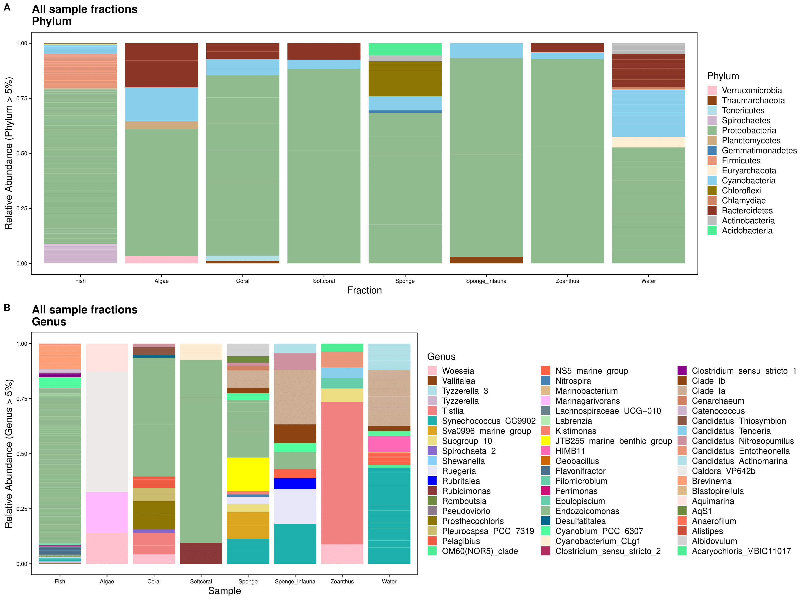
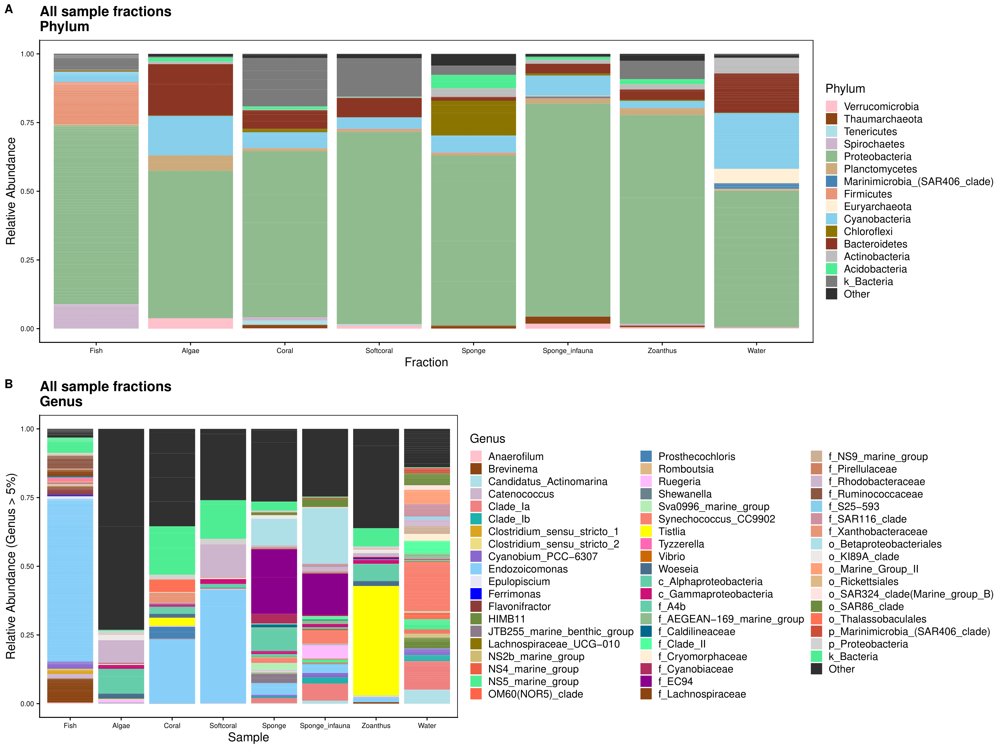

In this script we look at the relative abundance of phylum & genus level diversity across sample fractions.
First, we load the rarefied data set containing all sample fraction (fish, water, potential prey items).
Inspect the data and check if there are any empty ASV columns.
Now we make a column in taxonomy table for ASV IDs by number.
And then change row names in tax table (ASVs) to AVS IDs for plotting. Note. The ASV names in the rarefied data set will differ from the unrarefied data set because we decided to add new names after rarefying. That said, the ASV sequences have not changed and can be used for comparison.
[1] "ASV_1" "ASV_2" "ASV_3" "ASV_4" "ASV_5" "ASV_6"Next, we change row names in taxonomy table to AVS IDs for plotting purposes.
tax.rar.bocas.all <- data.frame(tax_table(ps.slv.tree.mbio.rar.bocas))
tax.rar.new <- data.frame(ASV_ID = row.names(tax.rar.bocas.all),
tax.rar.bocas.all)
tax.rar.new <- tax.rar.new[, c(2,3,4,5,6,7,1,8)]
tax.rar.new2 <- as.matrix(tax.rar.new)
ps.slv.tree.mbio.rar.bocas <- merge_phyloseq(
otu_table(ps.slv.tree.mbio.rar.bocas),
tax_table(tax.rar.new2),
sample_data(ps.slv.tree.mbio.rar.bocas),
phy_tree(ps.slv.tree.mbio.rar.bocas))
ps.slv.tree.mbio.rar.bocas
head(tax_table(ps.slv.tree.mbio.rar.bocas))
saveRDS(ps.slv.tree.mbio.rar.bocas,"rdata/p2/ps_16S_bocas_rar_all_ASVID.rds")First we gather the data at the phylum and genus levels. To do this we agglomerate the taxonomic levels and transform read counts to relative abundance. We filter out low abundance taxa (< 5%) and sort data frame alphabetically by phylum.
Fractions_phylum <- ps.slv.tree.mbio.rar.bocas %>%
tax_glom(taxrank = "Phylum") %>%
transform_sample_counts(function(x) {x/sum(x)} ) %>%
psmelt() %>%
filter(Abundance > 0.05) %>%
arrange(Phylum)
Fractions_genus <- ps.slv.tree.mbio.rar.bocas %>%
tax_glom(taxrank = "Genus") %>%
transform_sample_counts(function(x) {x/sum(x)} ) %>%
psmelt() %>%
filter(Abundance > 0.05) %>%
arrange(Genus)Then, we set all of the plot parameters. If you want to see all the code for plotting, please see the .Rmd file linked on the bottom of the page.

We can also see what happens when we include rare taxa in the plots, grouped into an Other category.
We start by renaming all NA taxa by the next highest named rank. To do this we first, create a copy of the original ps object before renaming taxa. That way we have a copy for other analyses.
tax.clean <- data.frame(tax_table(ps.slv.tree.mbio.rar.bocas_no_na))
for (i in 1:6){ tax.clean[,i] <- as.character(tax.clean[,i])}
tax.clean[is.na(tax.clean)] <- ""
for (i in 1:nrow(tax.clean)){
if (tax.clean[i,2] == ""){
kingdom <- base::paste("k", tax.clean[i,1], sep = "_")
tax.clean[i, 2:6] <- kingdom
} else if (tax.clean[i,3] == ""){
phylum <- base::paste("p", tax.clean[i,2], sep = "_")
tax.clean[i, 3:6] <- phylum
} else if (tax.clean[i,4] == ""){
class <- base::paste("c", tax.clean[i,3], sep = "_")
tax.clean[i, 4:6] <- class
} else if (tax.clean[i,5] == ""){
order <- base::paste("o", tax.clean[i,4], sep = "_")
tax.clean[i, 5:6] <- order
} else if (tax.clean[i,6] == ""){
tax.clean$Genus[i] <- base::paste("f",tax.clean$Family[i], sep = "_")
}
}
rm(class, order, phylum, kingdom)Then, we create new ASV names that have lowest rank name attached.
tax.clean <- tax.clean %>% unite("ASV_IDa", Genus:ASV_ID,
remove = FALSE, sep = "_")
tax.clean <- tax.clean %>% unite("ASV_IDb", ASV_ID:Genus,
remove = FALSE, sep = "_")
tax.clean <- tax.clean[, c(1,2,3,4,5,8,9,6,7,10)]
tax.clean$ASV_IDa <-
str_replace_all(tax.clean$ASV_IDa,
'Clostridium_sensu_stricto_[0-9]',
'Clostridium')
tax.clean$ASV_IDb <-
str_replace_all(tax.clean$ASV_IDb,
'Clostridium_sensu_stricto_[0-9]',
'Clostridium')
tax.clean$ASV_IDc <- tax.clean$ASV_IDa
tax.clean$ASV_IDc <-
str_replace_all(tax.clean$ASV_IDc,
'_ASV', '')
tax.clean <- tax.clean[, c(1,2,3,4,5,6,7,8,9,11,10)]
write.csv(tax.clean, "tables/p2/tax_rar_new_no_na.csv")And finally, add the taxonomy table back to the phyloseq object.
Optional If you want, you can choose to separate Proteobacteria into classes and then run the phylum level analysis. We do not do that here however the code is available if you wish to implement this option.
##############################
### UNCOMMENT CODE TO RUN ####
##############################
#proteo <- subset_taxa(ps.slv.tree.mbio.rar.bocas_no_na, Phylum=="Proteobacteria")
#get_taxa_unique(proteo, taxonomic.rank = rank_names(proteo)[3], errorIfNULL=TRUE)
#ps.rar.no.na.proteo <- ps.slv.tree.mbio.rar.bocas_no_na
#tax.clean2 <- data.frame(tax_table(ps.rar.no.na.proteo))
#for (i in 1:nrow(tax.clean2)){
# if (tax.clean2[i,2] == "Proteobacteria" & tax.clean2[i,3] == "Alphaproteobacteria"){
# phylum <- paste("Alphaproteobacteria")
# tax.clean2[i, 2] <- phylum
#} else if (tax.clean2[i,2] == "Proteobacteria" & tax.clean2[i,3] == "Gammaproteobacteria"){
# phylum <- paste("Gammaproteobacteria")
# tax.clean2[i, 2] <- phylum
#} else if (tax.clean2[i,2] == "Proteobacteria" & tax.clean2[i,3] == "Deltaproteobacteria"){
# phylum <- paste("Deltaproteobacteria")
# tax.clean2[i, 2] <- phylum
#} else if (tax.clean2[i,2] == "Proteobacteria" & tax.clean2[i,3] == "p_Proteobacteria"){
# phylum <- paste("unc_Proteobacteria")
# tax.clean2[i, 2] <- phylum
# }
#}
#tax_table(ps.rar.no.na.proteo) <- as.matrix(tax.clean2)
#rank_names(ps.rar.no.na.proteo)
#rm(class, order, phylum, kingdom)
#get_taxa_unique(ps.rar.no.na.proteo,
# taxonomic.rank = rank_names(ps.rar.no.na.proteo)[2],
# errorIfNULL=TRUE)First we choose the number of taxa to display for phylum and genus, then collapse the rest into Other.
ps.rar.bocas_agg_phy <- aggregate_top_taxa(ps.slv.tree.mbio.rar.bocas_no_na,
top = 15, level = "Phylum")
ps.rar.bocas_agg_phy
get_taxa_unique(ps.rar.bocas_agg_phy,
taxonomic.rank = rank_names(ps.rar.bocas_agg_phy)[2],
errorIfNULL = TRUE)
ps.rar.bocas_agg_gen <- aggregate_top_taxa(ps.slv.tree.mbio.rar.bocas_no_na,
top = 57, level = "Genus")
get_taxa_unique(ps.rar.bocas_agg_gen,
taxonomic.rank = rank_names(ps.rar.bocas_agg_gen)[2],
errorIfNULL = TRUE)We then select the order of the taxa to display. If you want to see all the code for ordering, please see the .Rmd file linked on the bottom of the page.
And gather the data at the phylum and genus levels.
Fractions_phylum <- ps.rar.bocas_agg_phy %>%
transform_sample_counts(function(x) {x/sum(x)} ) %>%
psmelt()
Fractions_phylum$Phylum <- gdata::reorder.factor(Fractions_phylum$Phylum,
new.order = phy_order)
Fractions_phylum <- Fractions_phylum %>% dplyr::arrange(Phylum)
levels(Fractions_phylum$Phylum)
attributes(Fractions_phylum$Phylum)
Fractions_genus <- ps.rar.bocas_agg_gen %>%
transform_sample_counts(function(x) {x/sum(x)} ) %>%
psmelt()
Fractions_genus$Genus <- gdata::reorder.factor(Fractions_genus$Genus, new.order = gen_order)
Fractions_genus <- Fractions_genus %>% dplyr::arrange(Genus)
levels(Fractions_genus$Genus)
attributes(Fractions_genus$Genus)Then we set the themes for plotting. If you want to see all the code for plotting, please see the .Rmd file linked on the bottom of the page.

That’s the end of Script 2. In the next Script we subset the fish samples for downstream analysis.
The source code for this page can be accessed on GitHub by clicking this link.
If you see mistakes or want to suggest changes, please create an issue on the source repository.
Text and figures are licensed under Creative Commons Attribution CC BY 4.0. Source code is available at https://github.com/bocasbiome/web/, unless otherwise noted. The figures that have been reused from other sources don't fall under this license and can be recognized by a note in their caption: "Figure from ...".